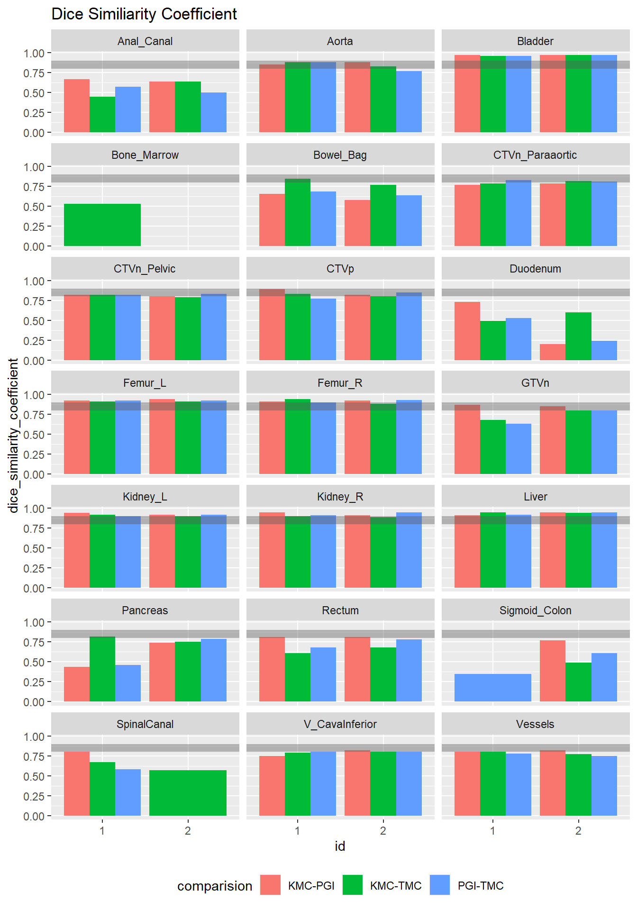
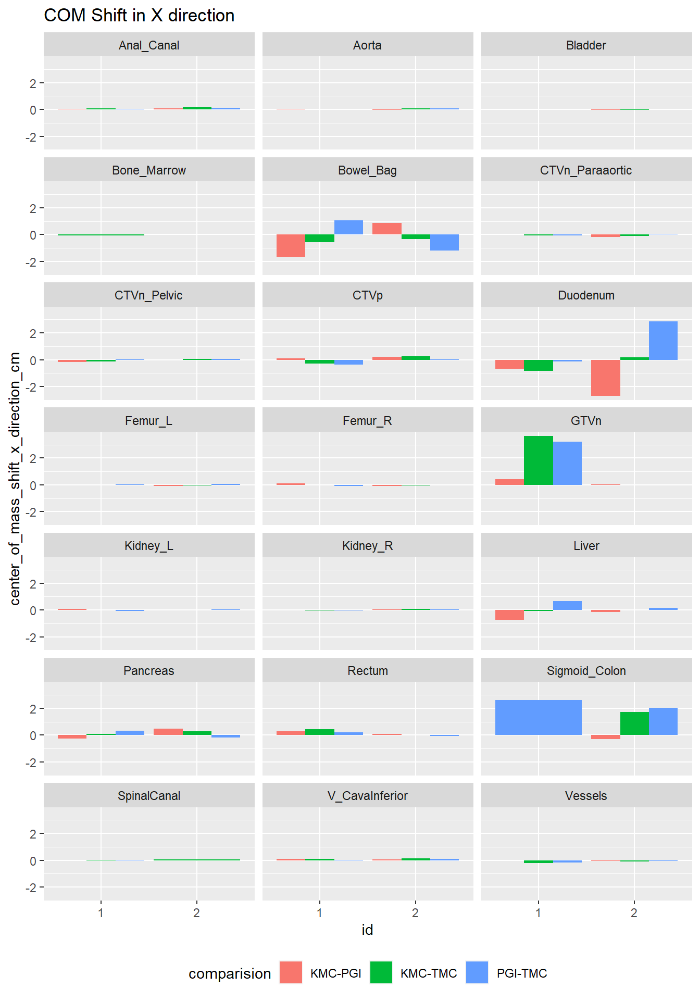
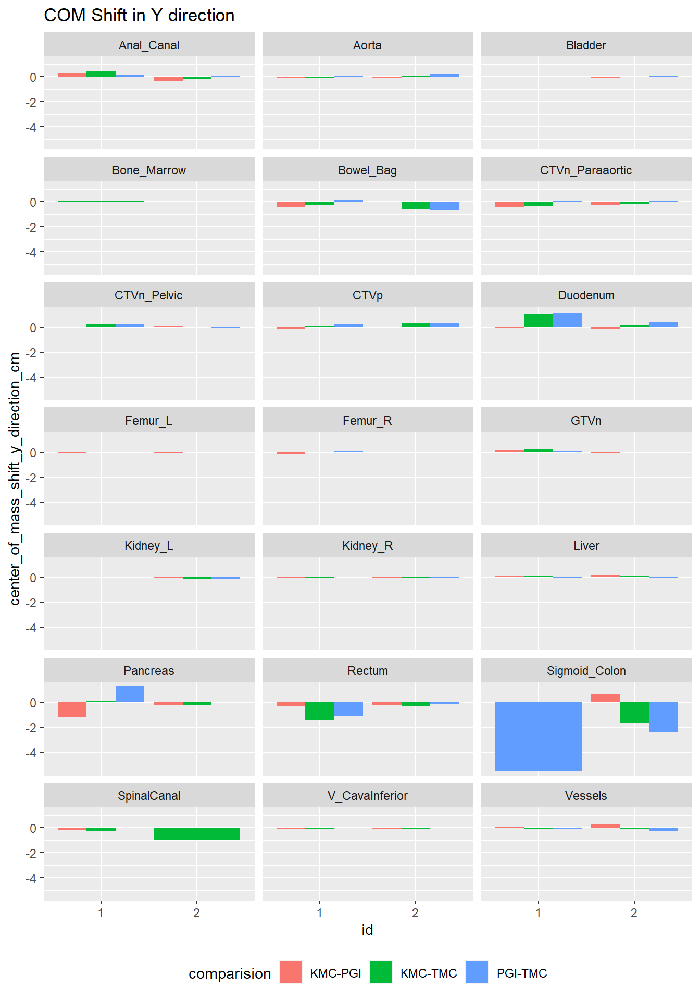
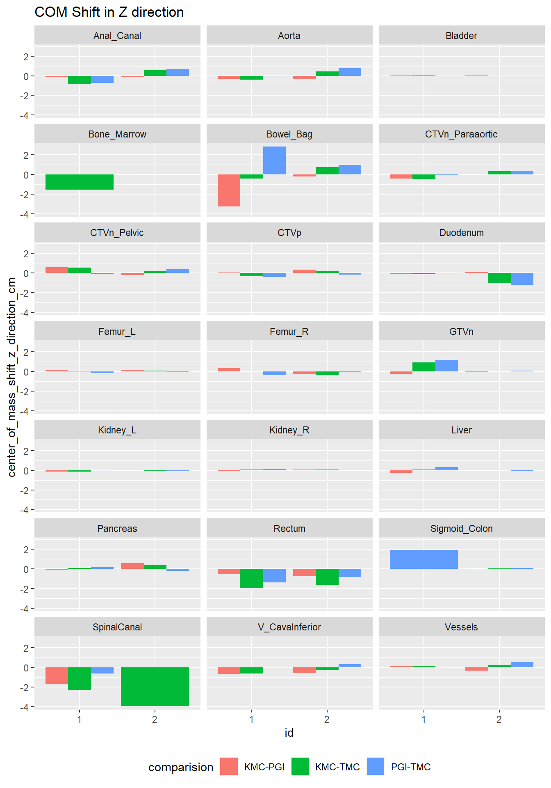
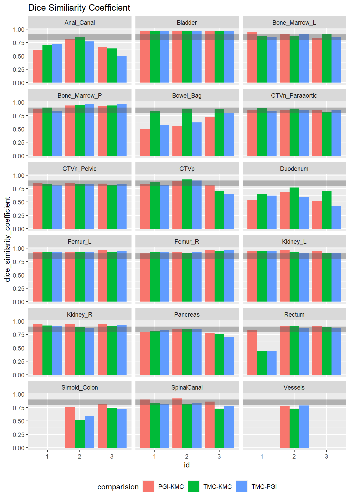
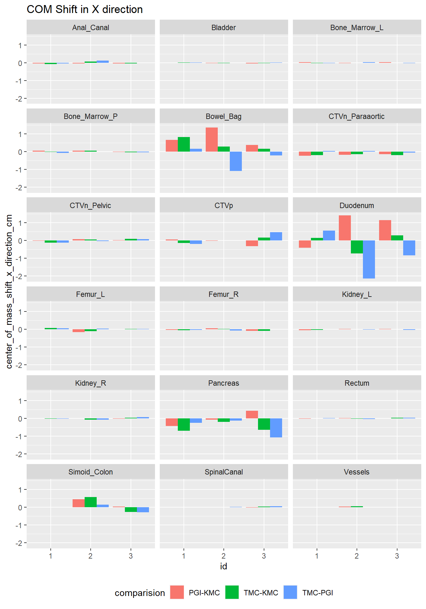
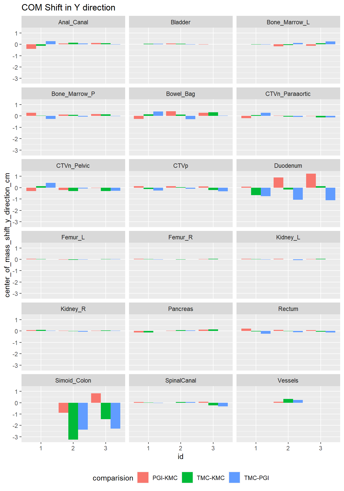
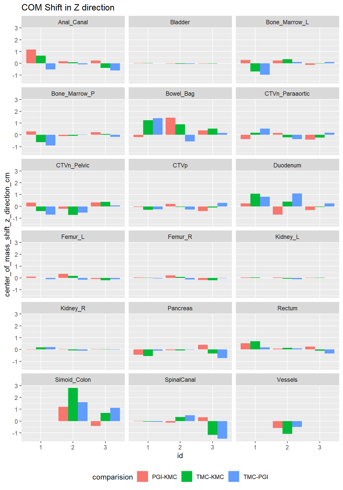

| Characteristic | KMC, N = 21 | PGI, N = 21 | TMC, N = 21 |
|---|---|---|---|
| Anal_Canal | |||
| Yes | 2 (100%) | 2 (100%) | 2 (100%) |
| Aorta | |||
| Yes | 2 (100%) | 2 (100%) | 2 (100%) |
| Bladder | |||
| Yes | 2 (100%) | 2 (100%) | 2 (100%) |
| Bone_Marrow | |||
| Yes | 1 (100%) | 0 (NA%) | 1 (100%) |
| Unknown | 1 | 2 | 1 |
| Bowel_Bag | |||
| Yes | 2 (100%) | 2 (100%) | 2 (100%) |
| CTVn_Paraaortic | |||
| Yes | 2 (100%) | 2 (100%) | 2 (100%) |
| CTVn_Pelvic | |||
| Yes | 2 (100%) | 2 (100%) | 2 (100%) |
| CTVp | |||
| Yes | 2 (100%) | 2 (100%) | 2 (100%) |
| Duodenum | |||
| Yes | 2 (100%) | 2 (100%) | 2 (100%) |
| Femur_L | |||
| Yes | 2 (100%) | 2 (100%) | 2 (100%) |
| Femur_R | |||
| Yes | 2 (100%) | 2 (100%) | 2 (100%) |
| GTVn | |||
| Yes | 2 (100%) | 2 (100%) | 2 (100%) |
| Kidney_L | |||
| Yes | 2 (100%) | 2 (100%) | 2 (100%) |
| Kidney_R | |||
| Yes | 2 (100%) | 2 (100%) | 2 (100%) |
| Liver | |||
| Yes | 2 (100%) | 2 (100%) | 2 (100%) |
| Pancreas | |||
| Yes | 2 (100%) | 2 (100%) | 2 (100%) |
| Rectum | |||
| Yes | 2 (100%) | 2 (100%) | 2 (100%) |
| SpinalCanal | |||
| Yes | 2 (100%) | 1 (100%) | 2 (100%) |
| Unknown | 0 | 1 | 0 |
| V_CavaInferior | |||
| Yes | 2 (100%) | 2 (100%) | 2 (100%) |
| Vessels | |||
| Yes | 2 (100%) | 2 (100%) | 2 (100%) |
| Sigmoid_Colon | |||
| Yes | 1 (100%) | 2 (100%) | 2 (100%) |
| Unknown | 1 | 0 | 0 |
| 1 n (%) | |||
PROPARA RTTQA Round 1 and 2
Round 1
Introduction
This is the first iteration of the quality assurance for PROPARA trial. Planning CT scans of two de-identified patients suffering from cervical cancer who gave consent for CHAVI bio banking was used for this. The objective was to determine the discrepancies in the target volume and organ at risk segmentation for the cases. Both cases were segmented by two institutes with a common structure template. The quantitative metrics of volume, dice similarity coefficient and center of mass shifts were obtained from the Contouring statistics module in Eclipse 15.5 workstation. Analysis was done in R.
Results
First we show all the structures that have been delineated by the institutes. Note that there was discrepancy in the labeling of inferior vena cava, vessels and spinal canal which had to be corrected. In addition when importing into Varian Eclipse TPS it was found the the structure names were altered as the labels were not setup appropriately. These had to be corrected manually in the TPS.
Now we will see the structure wise volumes at different centers.
| Characteristic | Anal_Canal, N = 21 | Aorta, N = 21 | Bladder, N = 21 | Bone_Marrow, N = 11 | Bowel_Bag, N = 21 | CTVn_Paraaortic, N = 21 | CTVn_Pelvic, N = 21 | CTVp, N = 21 | Duodenum, N = 21 | Femur_L, N = 21 | Femur_R, N = 21 | GTVn, N = 21 | Kidney_L, N = 21 | Kidney_R, N = 21 | Liver, N = 21 | Pancreas, N = 21 | Rectum, N = 21 | Sigmoid_Colon, N = 21 | SpinalCanal, N = 21 | V_CavaInferior, N = 21 | Vessels, N = 21 |
|---|---|---|---|---|---|---|---|---|---|---|---|---|---|---|---|---|---|---|---|---|---|
| KMC | 10 (9, 12) | 12 (12, 13) | 495 (456, 535) | 495 (495, 495) | 2,158 (2,102, 2,213) | 107 (101, 113) | 318 (297, 338) | 211 (193, 229) | 56 (48, 65) | 104 (96, 111) | 92 (82, 103) | 5 (3, 7) | 127 (113, 142) | 139 (123, 156) | 1,284 (1,132, 1,435) | 81 (78, 83) | 34 (34, 34) | 34 (34, 34) | 22 (20, 25) | 18 (18, 19) | 73 (64, 82) |
| Unknown | 0 | 0 | 0 | 0 | 0 | 0 | 0 | 0 | 0 | 0 | 0 | 0 | 0 | 0 | 0 | 0 | 0 | 1 | 0 | 0 | 0 |
| PGI | 6 (5, 6) | 10 (9, 11) | 494 (459, 530) | NA (NA, NA) | 993 (918, 1,069) | 106 (102, 109) | 285 (266, 304) | 172 (150, 194) | 30 (23, 37) | 93 (87, 98) | 86 (79, 93) | 5 (3, 7) | 121 (103, 139) | 133 (114, 152) | 1,190 (1,075, 1,305) | 38 (33, 43) | 26 (25, 26) | 32 (30, 34) | 33 (33, 33) | 14 (14, 14) | 67 (61, 72) |
| Unknown | 0 | 0 | 0 | 1 | 0 | 0 | 0 | 0 | 0 | 0 | 0 | 0 | 0 | 0 | 0 | 0 | 0 | 0 | 1 | 0 | 0 |
| TMC | 7 (6, 8) | 12 (11, 13) | 483 (455, 511) | 1,106 (1,106, 1,106) | 1,862 (1,753, 1,972) | 91 (86, 95) | 308 (278, 338) | 238 (188, 289) | 27 (26, 29) | 88 (82, 94) | 85 (77, 94) | 7 (4, 10) | 112 (101, 123) | 119 (106, 132) | 1,237 (1,086, 1,388) | 72 (65, 79) | 26 (26, 27) | 76 (63, 89) | 20 (17, 22) | 14 (14, 15) | 69 (57, 81) |
| 1 Median (IQR) | |||||||||||||||||||||
Now we will see the Dice similarity coefficients

In the above plot, the DSC between institutes is shown. Three possible combinations are illustrated:
- KMC - PGI
- KMC - TMC
- PGI - TMC
The horizontal band shows the region of DSC between 0.8 - 0.9 and DSC consistently above this would indicate a high degree of agreement between the structures.
As can be seen good agreement with DSC is seen for the following structures:
- Bladder
- Femur
- Kidney
- Liver
Now we will visualize the COM shifts between the structures.



Major COM shifts in each of the cardinal axes is shown in the table below:
| X axis | Y axis | Z axis |
|---|---|---|
Bowel Bag Duodenum GTV N Sigmoid Colon |
Pancreas Rectum Sigmoid Colon Spinal canal |
Bone marrow Bowel Bag Rectum Sigmoid colon Spinal Canal |
Round 2
Introduction
This is the second iteration of the quality assurance for PROPARA trial. Planning CT scans of three de-identified patients suffering from cervical cancer who gave consent for CHAVI bio banking was used for this. The objective was to determine the discrepancies in the target volume and organ at risk segmentation for the cases. Both cases were segmented by two institutes with a common structure template. The quantitative metrics of volume, dice similarity coefficient and center of mass shifts were obtained from the Contouring statistics module in Eclipse 15.5 workstation. Analysis was done in R.
Results
First we show all the structures that have been delineated by the institutes. Note that there was discrepancy in the labeling of inferior venacava, vessels and spinal canal which had to be corrected. In addition when importing into Varian Eclipse TPS it was found the the structure names were altered as the labels were not setup appropriately. These had to be corrected manually in the TPS.
| Characteristic | KMC, N = 31 | PGI, N = 31 | TMC, N = 31 |
|---|---|---|---|
| Anal_Canal | |||
| Yes | 3 (100%) | 3 (100%) | 3 (100%) |
| Bladder | |||
| Yes | 3 (100%) | 3 (100%) | 3 (100%) |
| Bone_Marrow_L | |||
| Yes | 3 (100%) | 3 (100%) | 3 (100%) |
| Bone_Marrow_P | |||
| Yes | 3 (100%) | 3 (100%) | 3 (100%) |
| Bowel_Bag | |||
| Yes | 3 (100%) | 3 (100%) | 3 (100%) |
| CTVn_Paraaortic | |||
| Yes | 3 (100%) | 3 (100%) | 3 (100%) |
| CTVn_Pelvic | |||
| Yes | 3 (100%) | 3 (100%) | 3 (100%) |
| CTVp | |||
| Yes | 3 (100%) | 3 (100%) | 3 (100%) |
| Duodenum | |||
| Yes | 3 (100%) | 3 (100%) | 3 (100%) |
| Femur_L | |||
| Yes | 3 (100%) | 3 (100%) | 3 (100%) |
| Femur_R | |||
| Yes | 3 (100%) | 3 (100%) | 3 (100%) |
| Kidney_L | |||
| Yes | 3 (100%) | 3 (100%) | 3 (100%) |
| Kidney_R | |||
| Yes | 3 (100%) | 3 (100%) | 3 (100%) |
| Pancreas | |||
| Yes | 3 (100%) | 3 (100%) | 3 (100%) |
| Rectum | |||
| Yes | 3 (100%) | 3 (100%) | 3 (100%) |
| SpinalCanal | |||
| Yes | 3 (100%) | 3 (100%) | 3 (100%) |
| Simoid_Colon | |||
| Yes | 2 (100%) | 2 (100%) | 2 (100%) |
| Unknown | 1 | 1 | 1 |
| Vessels | |||
| Yes | 1 (100%) | 1 (100%) | 1 (100%) |
| Unknown | 2 | 2 | 2 |
| 1 n (%) | |||
Now we will see the structure wise volumes at different centers.
| Characteristic | Anal_Canal, N = 31 | Bladder, N = 31 | Bone_Marrow_L, N = 31 | Bone_Marrow_P, N = 31 | Bowel_Bag, N = 31 | CTVn_Paraaortic, N = 31 | CTVn_Pelvic, N = 31 | CTVp, N = 31 | Duodenum, N = 31 | Femur_L, N = 31 | Femur_R, N = 31 | Kidney_L, N = 31 | Kidney_R, N = 31 | Pancreas, N = 31 | Rectum, N = 31 | Simoid_Colon, N = 21 | SpinalCanal, N = 31 | Vessels, N = 11 |
|---|---|---|---|---|---|---|---|---|---|---|---|---|---|---|---|---|---|---|
| TMC | 15 (14, 17) | 248 (234, 259) | 234 (222, 262) | 659 (636, 690) | 2,861 (2,583, 3,127) | 111 (109, 117) | 334 (326, 346) | 193 (182, 199) | 44 (43, 51) | 99 (97, 100) | 95 (93, 102) | 141 (116, 146) | 137 (129, 149) | 79 (72, 83) | 27 (22, 30) | 16 (15, 17) | 24 (24, 29) | 65 (65, 65) |
| KMC | 16 (12, 16) | 257 (241, 257) | 249 (246, 278) | 680 (662, 710) | 3,370 (3,043, 3,700) | 117 (111, 118) | 346 (344, 379) | 198 (160, 201) | 48 (46, 60) | 105 (103, 107) | 106 (104, 111) | 154 (128, 157) | 145 (141, 155) | 90 (78, 104) | 37 (33, 47) | 31 (29, 32) | 41 (36, 44) | 103 (103, 103) |
| PGI | 10 (8, 12) | 259 (247, 267) | 227 (221, 241) | 646 (629, 648) | 1,682 (1,420, 1,841) | 128 (114, 129) | 378 (352, 406) | 191 (147, 199) | 50 (43, 61) | 103 (100, 105) | 100 (96, 104) | 154 (130, 157) | 159 (148, 159) | 84 (79, 92) | 36 (33, 47) | 28 (28, 28) | 36 (34, 41) | 93 (93, 93) |
| 1 Median (IQR) | ||||||||||||||||||
Now we will see the Dice similarity coefficients

In the above plot, the DSC between institutes is shown. Three possible combinations are illustrated:
- PGI - KMC
- TMC - KMC
- TMC - PGI
The horizontal band shows the region of DSC between 0.8 - 0.9 and DSC consistently above this would indicate a high degree of agreement between the structures.
As can be seen good agreement with DSC is seen for the following structures:
- Bladder
- Femur
- Kidney
- Bone_Marrow
Now we will visualize the COM shifts between the structures.



| structure | interation1 | interation2 |
|---|---|---|
| Anal_Canal | 0.59750 | 0.6891667 |
| Aorta | 0.85250 | NA |
| Bladder | 0.96750 | 0.9625000 |
| Bone_Marrow | 0.53000 | NA |
| Bowel_Bag | 0.67875 | 0.6933333 |
| CTVn_Paraaortic | 0.79625 | 0.8525000 |
| CTVn_Pelvic | 0.81250 | 0.8300000 |
| CTVp | 0.83375 | 0.8125000 |
| Duodenum | 0.46500 | 0.5916667 |
| Femur_L | 0.92250 | 0.9341667 |
| Femur_R | 0.91375 | 0.9316667 |
| GTVn | 0.79375 | NA |
| Kidney_L | 0.92000 | 0.9291667 |
| Kidney_R | 0.92125 | 0.9141667 |
| Liver | 0.93500 | NA |
| Pancreas | 0.64750 | 0.8066667 |
| Rectum | 0.74875 | 0.7733333 |
| Sigmoid_Colon | 0.59800 | NA |
| SpinalCanal | 0.68400 | 0.8258333 |
| V_CavaInferior | 0.79125 | NA |
| Vessels | 0.79250 | 0.7700000 |
| Bone_Marrow_L | NA | 0.8833333 |
| Bone_Marrow_P | NA | 0.9233333 |
| Simoid_Colon | NA | 0.6812500 |